김헌용, 신명중학교 영어 교사, 함께하는장애인교원노동조합 위원장
2026년 8월 14일(금), 국립생물자원관 교육강사 워크숍
나인트리 프리미어 로카우스 호텔 서울 용산 9층 안중근실
들어가며
여섯 살에 시력을 잃고 맹학교에서 열두 해, 2010년부터 중등 영어 교사
설명을 받는 위치
세계를 이해하는 방식을 바꾸어 온 학습
설명하는 자리
조건이 서로 다른 서른 명 앞
그 차이를 만든 것은 관람자의 감각이 아니라 그곳이 준비한 인프라와 서비스였다.
1
교직원 연수
남들과 똑같이 행렬을 따라다니며 눈으로 감상하는 또 한 명의 관람객으로 치부됐다.
2023년 겨울, 암스테르담
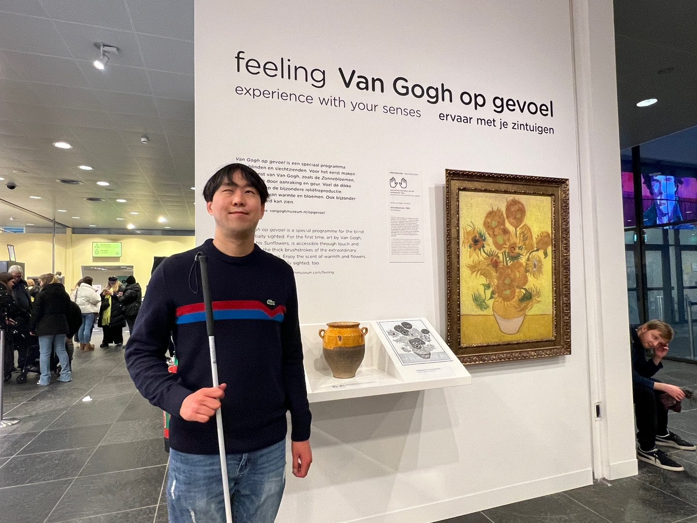
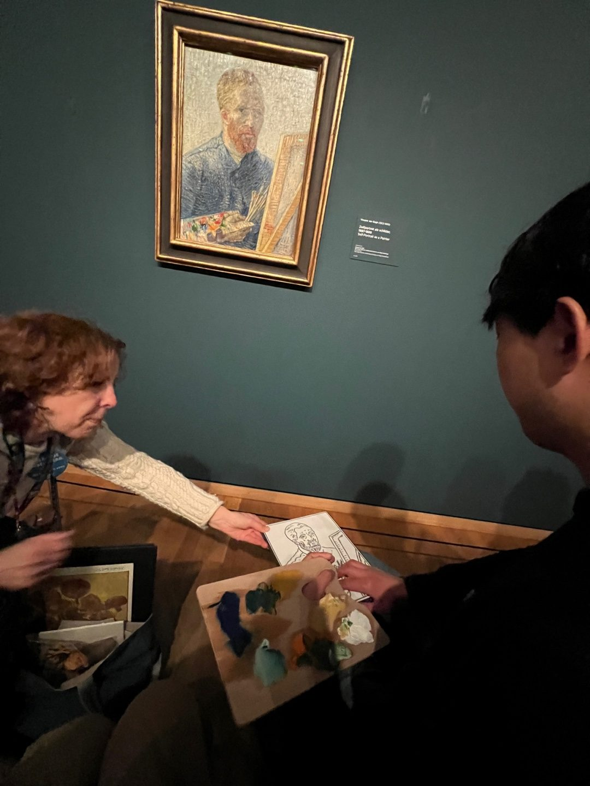
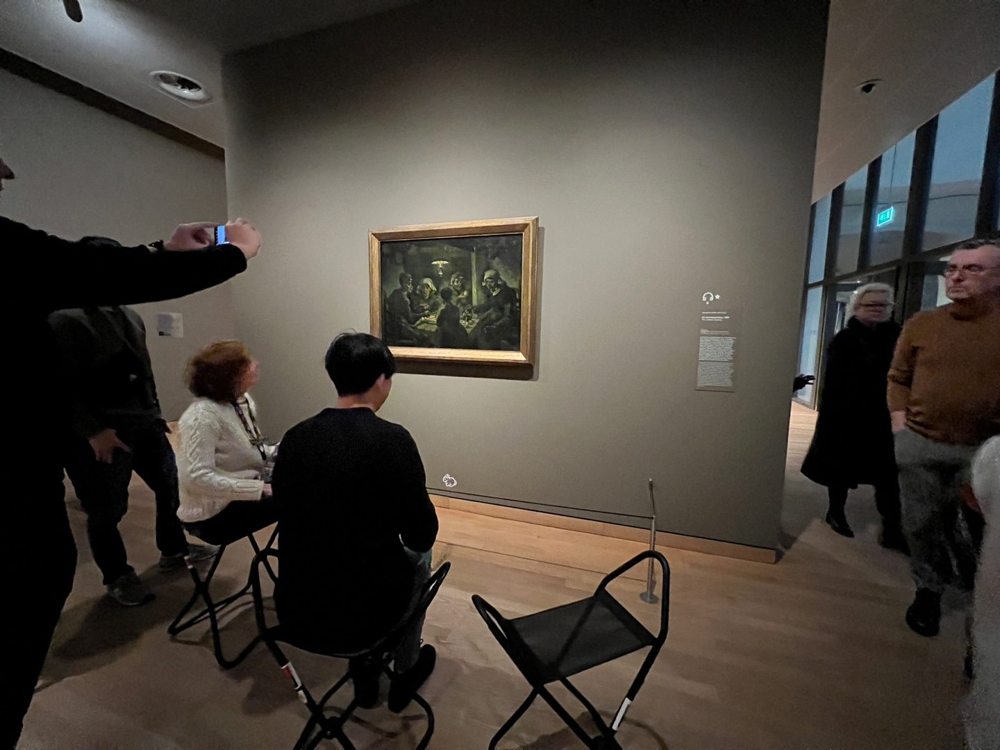
예정 시간을 크게 넘긴
1시간 40분
시각장애인 한 사람을 위해 준비한 해설이 다른 사람들에게도 감명 깊었던 모양이었다.
2022년 여름, 국립중앙박물관
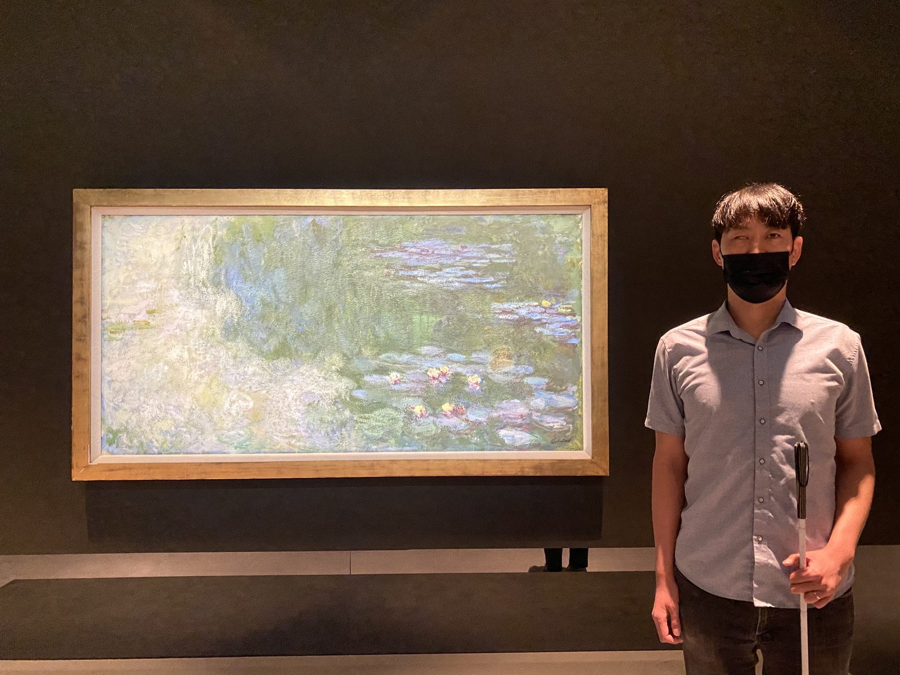
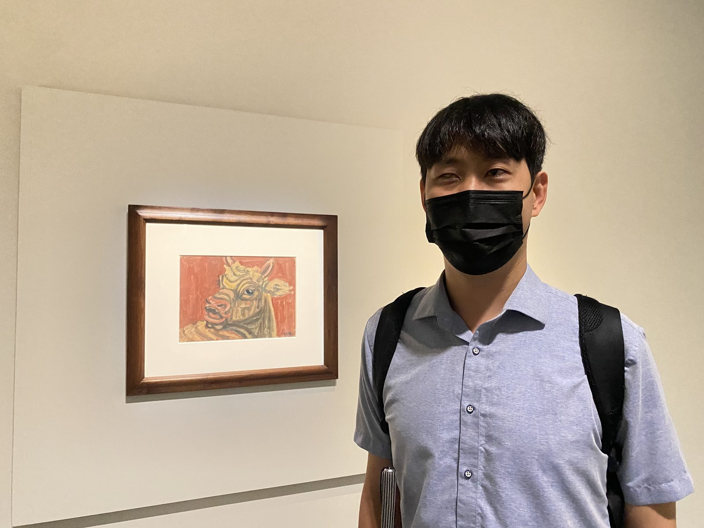
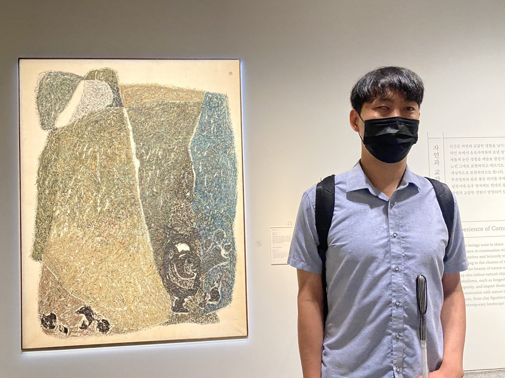
눈으로 볼 수 없는 전시의 설계도를 말로 건네받은 셈이다.
뮤지엄 산
다양한 관람객을 맞을 준비 부족
반 고흐 미술관
특별 제작된 교구와 능숙한 해설
국립중앙박물관
장애인 관람객을 위한 설계
소장한 작품 자체보다는 전달하는 방식과 관람객을 맞이하는 태도의 차이였다.
2
hands-on experience
글자 그대로 풀면 손을 올려놓는 경험
촉각 자료는 대상을 완벽하게 재현하지는 못하더라도 새로운 앎으로 이어지는 단단한 토대를 놓아 준다.
한 기관의 선의라기보다 도시들이 공유하는 관행
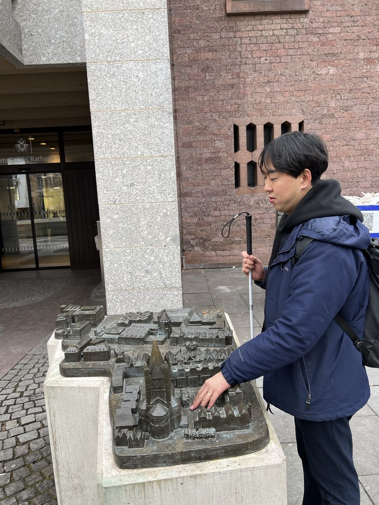
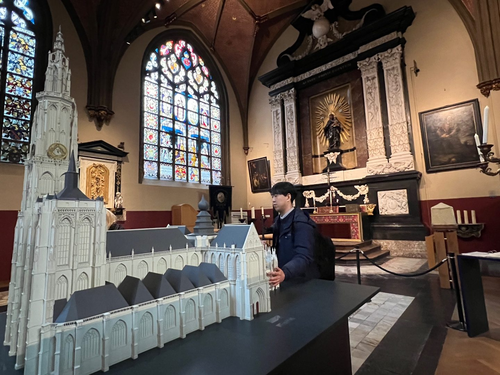
반 고흐 미술관 로비
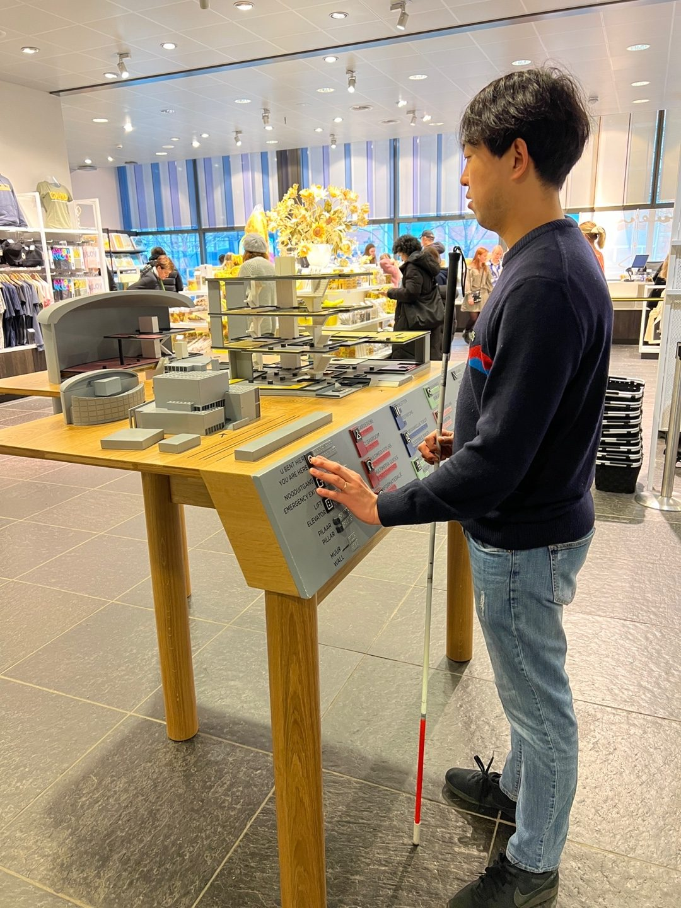
만져 보고 감탄하라고 놓은 조형물이 아니라 실제로 이동에 쓰는 지도였다.
시설 자체가 교육 목적으로 세워진 곳일수록 촉지도의 교육적 효과가 클 텐데 아쉬운 일이다.
올해 초, 레알 마드리드 홈 구장
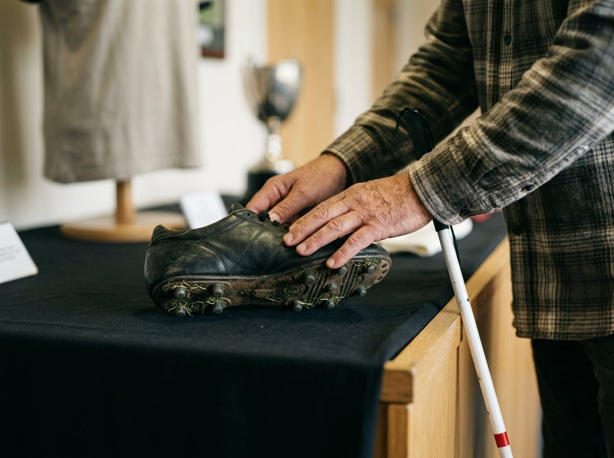
현장 사진을 대신해 생성한 이미지입니다
준비된 자료가 있어도 그것을 꺼내 주는 절차가 무거우면 없는 것과 같다.
2025년 3월, 국립중앙박물관 「공간_사이」
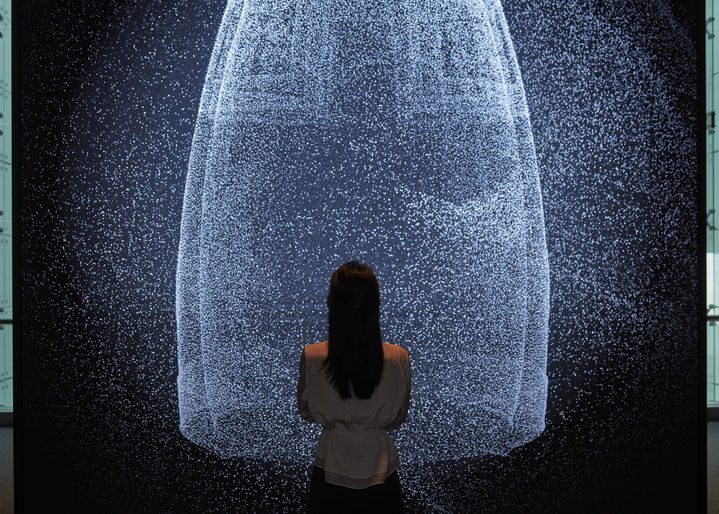
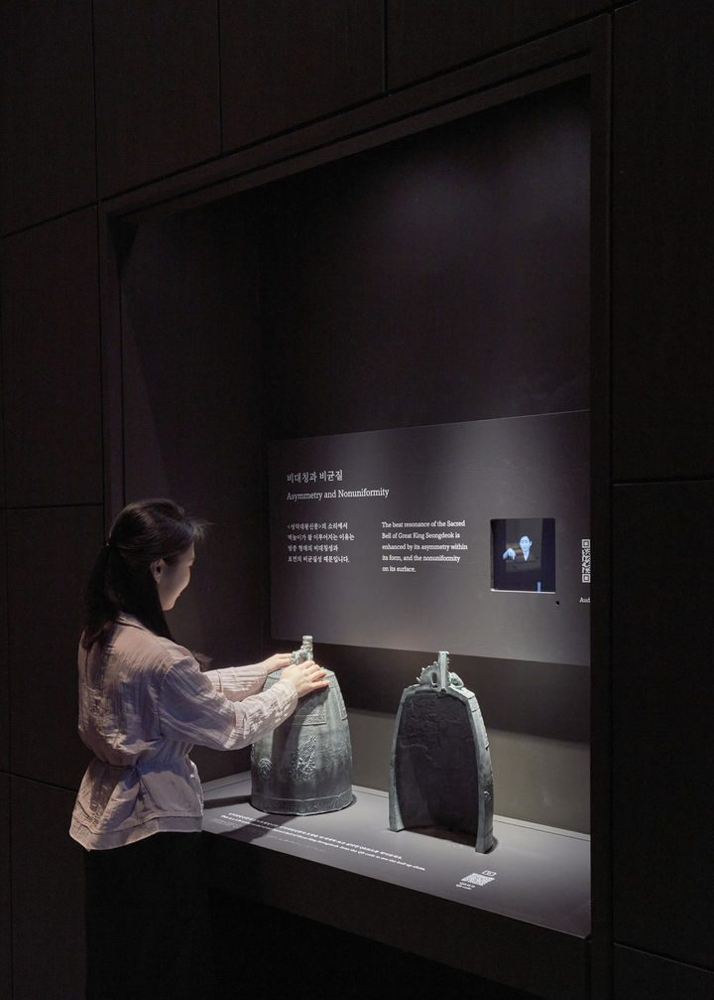
사진 출처: 뉴시스
특별한 사람을 위해 특별한 날에 여는 자리가 아니라 아무 때나 스며들 수 있는 자리로 만든 것이다.
촉각은 시각 설명을 보조하는 수단이 아니라 그 자체로 독립된 인식의 경로이다.
3
누구든 장벽 없이 들어올 수 있는 포용성과, 한 번 들어온 학생을 끝까지 머물게 하는 몰입감.
국립중앙박물관의 「공간_사이」가 종소리에 한 일과 구조가 같다
하나의 학습 목표를 소리와 텍스트, 시각적 이미지, 직접 조작, 즉각적 피드백으로 동시에 구현하면 어느 한 경로가 차단된 학습자도 다른 경로로 참여할 수 있다.
사례 하나, 공강 30분에 만든 단일 HTML 파일
Word Bomb 열기, engccer.github.io/word-bomb-L1
학습 콘텐츠 자체는 그대로 두고 그 콘텐츠로 들어가는 경로를 늘리는 것이다.
사례 둘, 수업 운영 도구
시각적으로 화려하면서도
접근성을 완벽하게 갖춰 줘
Pick Me 열기, aro-deeply.github.io/pickme
접근성은 기술적으로 어렵거나 불가능했던 일이 아니라 개발의 우선순위에서 늘 뒤로 밀려 있었을 뿐이다.
2026년 5월, 신명중학교 1학년 155명 익명 설문
전체 만족도 5점 만점에 4.35점으로 긍정 응답 85.8퍼센트, 수업 집중도 4.17점으로 긍정 응답 80.0퍼센트, 영어 학습 도움 3.94점으로 긍정 응답 72.9퍼센트
전체 만족도
4.35/5
긍정 85.8%
수업 집중도
4.17/5
긍정 80.0%
영어 학습 도움
3.94/5
긍정 72.9%
앞으로의 활용, 도움받은 영역
앞으로도 미니게임을 활용했으면
더 자주 58.1퍼센트, 지금 정도 적당 34.8퍼센트, 잘 모르겠음 6.5퍼센트, 줄였으면 좋겠다 155명 중 1명으로 0.6퍼센트
더 자주58.1%
지금 정도 적당34.8%
잘 모르겠음6.5%
1명155명 가운데 줄였으면 좋겠다는 응답
가장 도움받은 영역, 복수 응답
재미 54.2퍼센트, 단어 50.3퍼센트, 본문 독해 48.4퍼센트, 문법 36.8퍼센트, 발음 30.3퍼센트
재미
54.2%
단어
50.3%
본문 독해
48.4%
문법
36.8%
발음
30.3%
한 학생
풀이를 끝까지 읽지 않게 됨
다른 학생
긴장감이 떨어짐
정반대의 요구는 설계의 실패가 아니라 학습자 다양성의 증거로 읽어야 한다.
4
프로그램의 구성을 바꾸지 않고 진행 방식만으로 적용할 수 있는 것들이다.
하나
전체에게 물으면 답하는 일이 특별한 행동이 되지 않는다.
둘
뒤쪽에 앉은 학생과 잠시 주의가 흩어졌던 학생에게도 주의 집중 효과가 있다.
셋
나탈리가 내 등에 붓질의 방향을 그린 것이 그 예다.
넷
감각 경로가 하나 늘면 참여할 수 있는 학생이 늘어난다.
다섯
만져도 되는지 모르면 눈앞에 놓인 자료에도 손을 뻗지 않는다.
특정 학습자를 위해 준비한 조정은 그 회차에서만 쓰이고 사라지지 않는다.
나가며
한 사람의 필요에서 출발한 조치가 결국 모두가 쓰는 인프라가 된 것이다.
보지 못했기 때문에 오히려 더 알고 싶고, 그래서 친절한 설명이 덧붙여졌을 때 얻는 것도 그만큼 크다.
가장 조용히 앉아 있는 학생이
그날 설명을 가장 기다리고 있을 수 있다